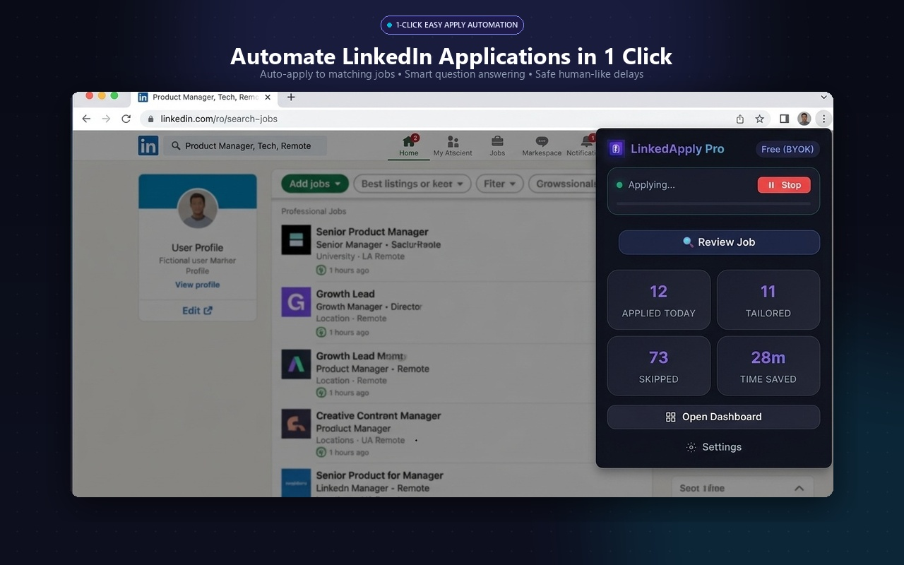
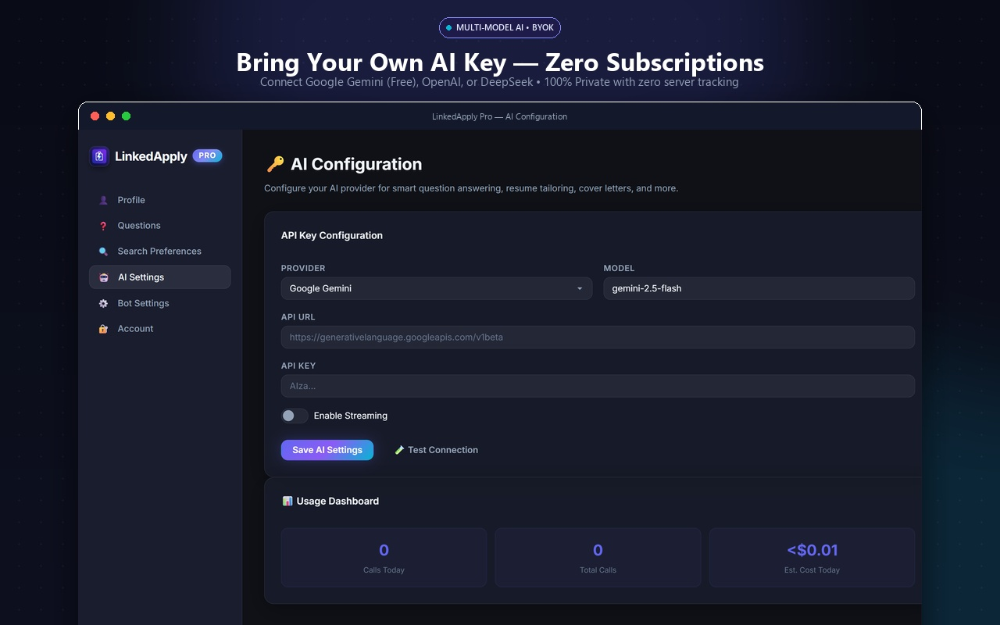
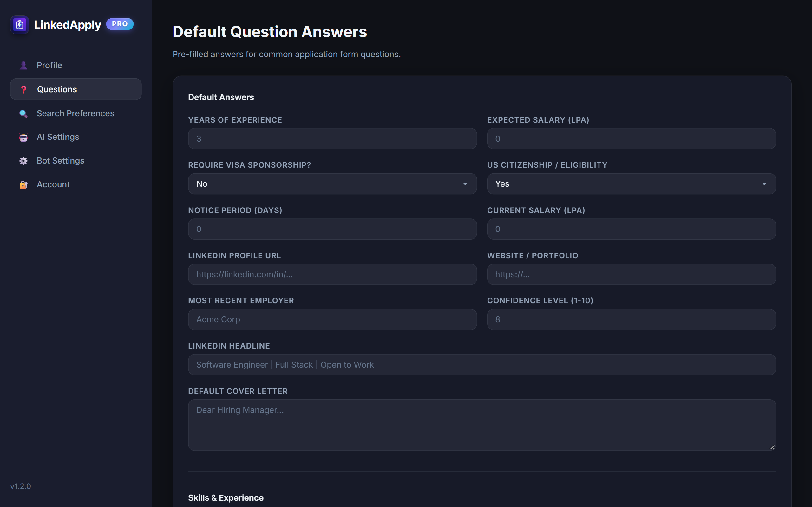
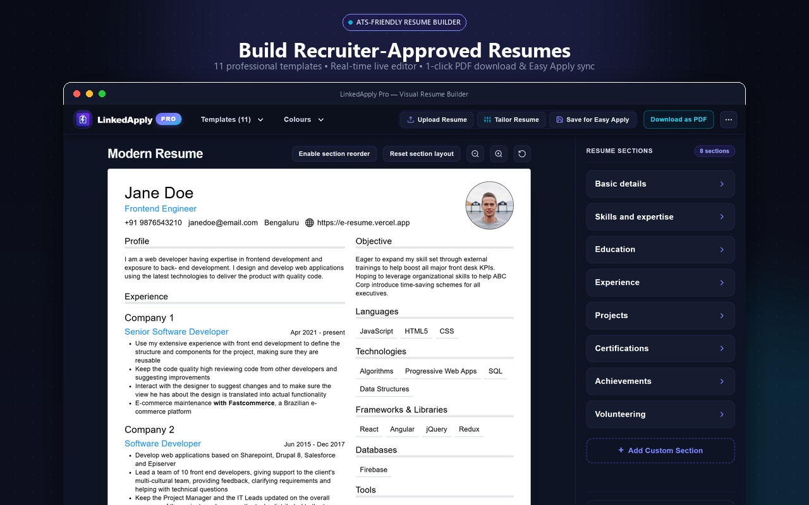
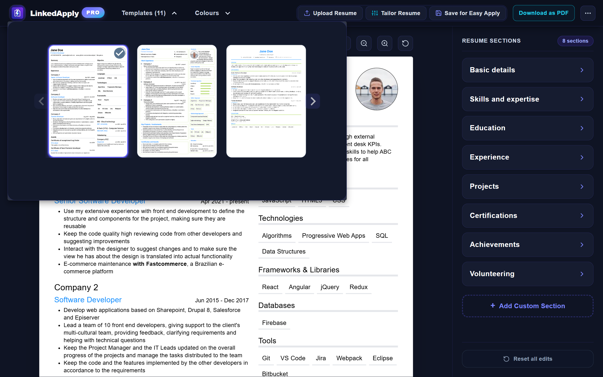
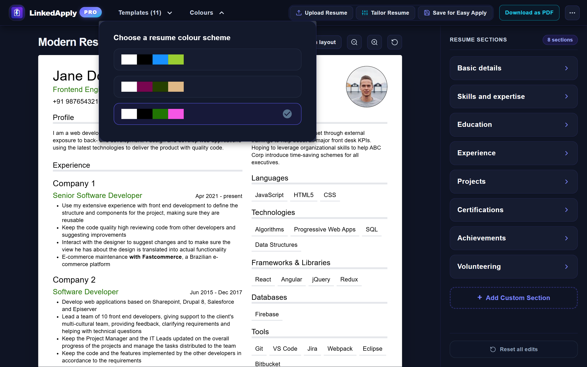
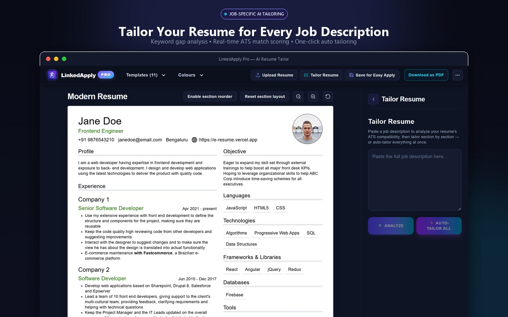
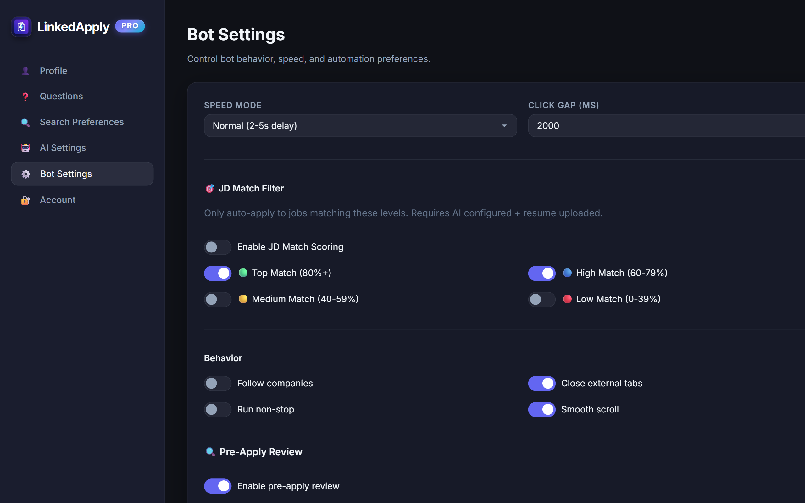
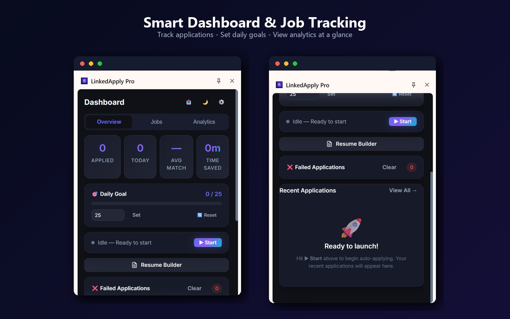

Mastering LinkedApply Pro
A comprehensive, step-by-step handbook covering AI configuration, ATS resume building, job-tailoring, safe auto-applying on LinkedIn, and application tracking.
🚀 Quick Start & Installation
LinkedApply Pro is built on Manifest V3. All code, settings, resumes, and API requests execute directly on your local device—no remote servers or middleman databases are involved.
Open chrome://extensions in your Chrome browser. Enable Developer mode in the top-right corner, click Load unpacked, and select the extension/dist folder (or install directly from the Chrome Web Store).
Click Chrome's puzzle piece icon 🧩 in the top toolbar, find LinkedApply Pro, and click the pin icon 📌. This gives you instant 1-click access to the popup controls on any tab.
LinkedApply Pro provides four integrated workspaces:
Extension Popup
Quick start/stop button, live application counter, and 1-click navigation from any LinkedIn page.
Sidepanel Dashboard
Runs alongside LinkedIn: Overview stats, daily goal progress, and Kanban job pipeline.
Visual Resume Builder
Full-page studio with 11 professional templates, color picker, and AI job-tailoring drawer.
Options & Settings
Profile form, pre-filled question answers, bot pacing speed, and AI API keys.

🤖 Bring Your Own AI (BYOK) Configuration
LinkedApply Pro uses a Bring Your Own Key (BYOK) model. Instead of paying a $30-$50/month subscription, you connect your own API key directly. All AI features—including question answering, keyword gap analysis, and bullet point rewriting—are completely free or cost fractions of a cent per job.
Google offers a generous free tier for Google Gemini Flash with thousands of free API calls per day. This is more than enough for hundreds of daily applications without spending a dime.
Step-by-Step Gemini Setup (Takes 60 Seconds)
Visit Google AI Studio and sign in with your Google account. Click Create API Key.
Open LinkedApply Pro Settings, navigate to the AI Settings tab on the left sidebar. Set Provider to Google Gemini, leave Model as gemini-2.5-flash, and paste your API key.
Click Test Connection. You should see a green checkmark indicating Connected!. Then click Save AI Settings.

Alternative Supported Providers
| Provider | Recommended Model | Cost per 100 Jobs | Best For |
|---|---|---|---|
| Google Gemini | gemini-2.5-flash |
$0.00 (Free Tier) | Best overall — fast, high intelligence, completely free |
| OpenAI | gpt-4o-mini |
~$0.04 | Ultra-reliable structured output formatting |
| DeepSeek | deepseek-chat |
~$0.02 | Budget-conscious users wanting strong reasoning |
| Custom Endpoint | OpenAI-compatible | Varies | Local LLMs (Ollama / LMStudio / vLLM) for total offline usage |
📋 Profile Setup & Pre-Filled Question Answers
LinkedIn Easy Apply forms frequently ask repetitive screening questions (e.g. years of experience, sponsorship, salary, notice period). Configuring your profile ensures these are answered accurately and instantly.

Key Screening Form Fields
| Field | Example Value | How the Bot Uses It |
|---|---|---|
| Years of Experience | 3, 5, 8 |
Fills numeric experience inputs for your primary profession. |
| Visa Sponsorship | No / Yes |
Answers "Will you now or in the future require sponsorship?" |
| US Citizenship / Eligibility | Yes / No |
Handles legal authorization and right-to-work screening dropdowns. |
| Notice Period (Days) | 0 (Immediate), 15, 30 |
Answers availability and start date questions. |
| Expected Salary | 120000 or local currency LPA |
Fills compensation expectations without manual typing. |
| Default Cover Letter | Markdown or plain text | Automatically uploaded or pasted when a cover letter is requested. |
When an application form asks a non-standard question not found in your default answers (e.g. "Have you worked with Kubernetes in an enterprise cluster?"), LinkedApply Pro automatically consults your AI provider and uploaded resume to draft a factual, tailored answer in seconds.
📄 Visual Resume Builder
LinkedApply Pro includes a full-fledged, standalone Visual Resume Builder designed for maximum ATS (Applicant Tracking System) parseability. It generates single and multi-page professional resumes directly in your browser.

Key Features of the Builder
Choose from 11 recruiter-tested designs: Modern, Classic, Technical, Inspired, Creative, Header Band, Straightforward, and Sidebar Left/Right. Switch anytime without losing data.
Rearrange Basic Details, Skills, Experience, Education, Projects, Certifications, Achievements, and Volunteering. Add custom sections with a single click.
Select tailored palette combinations (Indigo, Emerald, Navy, Crimson) that match your target industry's conventions.
Download a print-ready vector PDF instantly, or click Save for Easy Apply to automatically set your tailored resume as the default file uploaded during automation.


✨ Job-Specific AI Resume Tailoring
A generic resume converts poorly. Recruiter ATS algorithms score your resume against the exact keywords and skills in the job posting. LinkedApply Pro's AI Tailoring engine analyzes any job description and rewrites your resume sections to achieve high ATS match scores.

How to Tailor in 3 Steps:
In the Resume Builder, click ✨ Tailor Resume in the top navigation bar to slide out the tailoring workbench.
Copy the job requirements from LinkedIn or company careers site into the textarea and click 🔍 Analyze.
The engine runs an offline smart-matcher to identify matched vs missing skills, computes an ATS score, and suggests rewritten bullet points using Google's XYZ formula ("Accomplished [X] as measured by [Y] by doing [Z]"). Click ⚡ Auto-Tailor All to apply the enhancements.
⚡ LinkedIn Auto-Apply Automation
Once your profile and resume are set up, you can start applying to dozens of relevant jobs with a single click while maintaining safe browsing habits.

Automation Modes & Pacing
| Setting | Recommended Value | Purpose |
|---|---|---|
| Speed Mode | Normal (2-5s delay) |
Emulates natural human reading and clicking intervals to protect your LinkedIn account. |
| Click Gap | 2000 ms (2.0s) |
Time delay between successive form interactions. |
| JD Match Filter | Top Match (80%+) & High (60-79%) |
Only applies to jobs where your qualifications strongly match the requirements. |
| Pre-Apply Review | Enabled (Optional) |
Pauses before clicking final submit, allowing you to review all filled fields. |
How to Run an Automation Session:
- Navigate to linkedin.com/jobs in Chrome.
- Enter your job title and preferred location (e.g. "Frontend Engineer" in "Remote").
- Ensure the Easy Apply filter toggle is active on LinkedIn.
- Open the LinkedApply Pro popup or sidepanel and click ▶ Start.
- The bot will scroll through listings, verify match criteria, fill application questions, upload your resume, and submit.
📊 Sidepanel Dashboard & Application Tracking
Monitor your job search pipeline in real-time through the sidepanel dashboard that docks right beside LinkedIn.

Dashboard Features
📈 Live Session Metrics
Track applications sent today, total applications, average match percentage, and estimated hours saved.
🎯 Daily Goal Tracker
Set a daily application target (e.g. 25/day). The visual progress bar tracks completion and stops when your goal is met.
📋 Kanban Job Pipeline
View all applied jobs categorized by status: Applied, Interviewing, Offer, or Archived with direct links to job posts.
❌ Failed Application Inspector
Shows any application that could not be completed (e.g. external complex redirects) with 1-click logs to finish manually.
🛡️ LinkedIn Account Safety & Best Practices
Automating job searches requires discipline to keep your LinkedIn account in good standing. Follow these golden rules for risk-free operation:
• New accounts (< 6 months old): 15–25 applications per day.
• Established accounts (> 1 year old): 40–60 applications per day.
• Avoid setting daily goals higher than 75 to keep activity within typical human thresholds.
Always use Normal Speed Mode with 2–5 second delays. Never reduce click gaps to zero.
Do not run other automation tools or scrapers on LinkedIn at the same time. Let LinkedApply Pro handle your sessions smoothly.
❓ FAQ & Troubleshooting
Q: Is LinkedApply Pro really 100% free?
Yes. The extension itself is completely free with no subscriptions. When using Google Gemini for AI question answering, Google's free tier provides thousands of free requests daily at zero cost.
Q: Are my LinkedIn passwords or personal data collected?
Never. LinkedApply Pro runs 100% client-side inside your browser sandbox. It never touches your account password, and your resumes and settings are saved exclusively in your browser's local storage.
Q: What if a job requires an external redirect instead of Easy Apply?
LinkedApply Pro specifically handles LinkedIn Easy Apply modals. When a job redirects to Workday, Greenhouse, or external career portals, the bot flags it and gracefully skips or logs it under Failed/External so you can apply manually if desired.
Q: How do I back up or transfer my resumes and settings?
Go to Settings → Account. Click Export Data to download a complete JSON backup of all your saved resumes, profile information, and application history. You can restore it on any computer anytime.